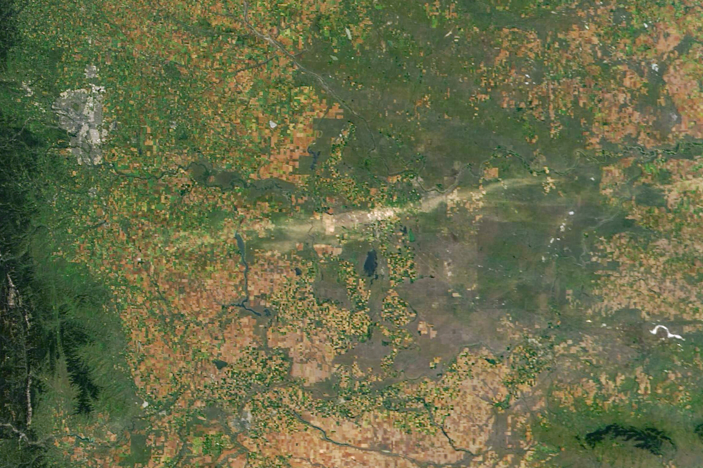

Hail Scars Alberta Farmland
Although severe thunderstorms occur less frequently in Canada than in many parts of the United States, southern Alberta is known as “hailstorm alley.” The region’s climate and geography are conducive to storm development, and the area typically sees dozens of hail events each year that collectively cause hundreds of millions of dollars in damage.
The latest destructive storm to hit the region arrived on August 20, 2025, when a supercell storm raced across southern Alberta. The storm brought destructive winds gusting as high as 149 kilometers (93 miles) per hour and pummeled the area with hail that some observers reported reached golf ball size.
The pair of images above highlights the long swath of damage visible in satellite imagery in the aftermath of the storm. The first image (left) shows a mixture of farmland, grasslands, and forests southeast of Calgary on August 19, 2025; the second image (right) shows the same area on August 24, after the storm had battered the landscape. The images were acquired with the MODIS (Moderate Resolution Imaging Spectroradiometer) on NASA’s Terra and Aqua satellites, respectively.
The hail scar in the August 24 image measures roughly 15 kilometers wide and 200 kilometers long. Hail damage like this becomes especially visible to satellites in the mid- to late summer, after vegetation has matured and greened up.
According to news reports, the storm uprooted trees, damaged cars, downed power transmission lines, and flattened crops. Some farmers in the region have reported extensive damage. Crops commonly grown in the area include wheat, alfalfa, and canola.
Insurers expect to see claims filed as a result of the event in the coming days and weeks, adding to the financial toll that hail has taken on Alberta in recent years. The latest event adds to the 92 million Canadian dollars ($66 million) in insured losses following an event in July 2025, according to one Canadian trade magazine. Insured hail damage in Alberta has totaled more than 6 billion Canadian dollars in the past five years, the magazine reported.
Meanwhile, scientists at NASA’s Langley Research Center are collaborating with reinsurance companies to improve models of hail risks based on input from satellites. “With state-of-the-art identification techniques, we can quantify severe storm distribution and frequency with an exceptional level of consistency that’s only granted by satellite measurements,” said Benjamin Scarino, a research scientist at Langley. “Long-term satellite data records allow us to provide the reinsurance industry, project partners, and the research community with valuable insights into severe storm activity and risk.”